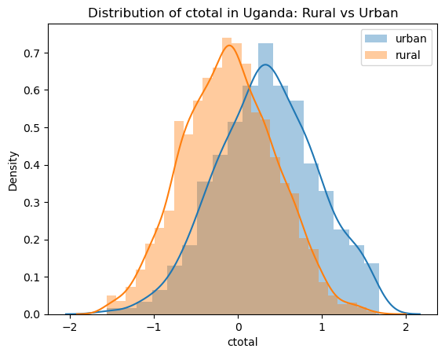
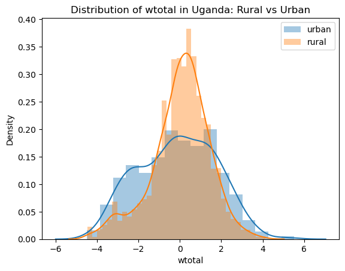
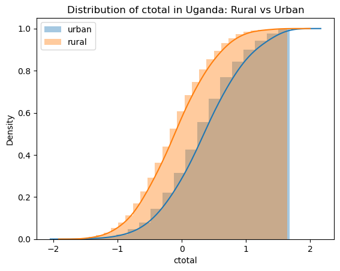
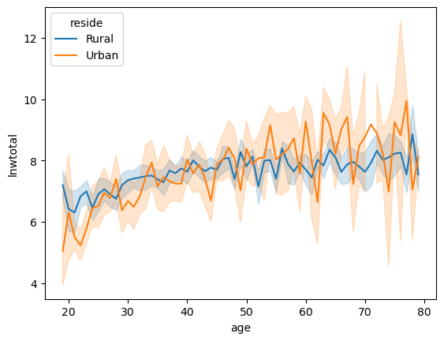
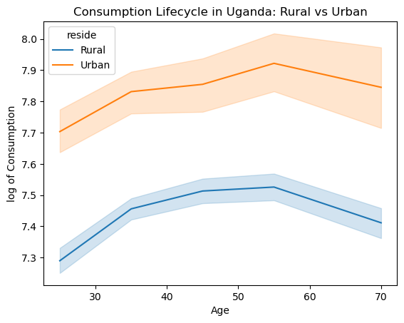

import pandas as pd
import numpy as np
import matplotlib.pyplot as plt
import os
import seaborn as sns
## Change this path to the one where you save the functions.py file
os.chdir('C:/Users/jzurita/OneDrive - University of Edinburgh/Courses/Programming Numerical Methods/Week 3')
from functions import gini
Programming and Numerical Methods for Economics
Programming and Numerical Methods for Economics
Case Study: Uganda ISA-LSMS
import warnings
warnings.filterwarnings("ignore")#display options
pd.options.display.float_format = '{:,.2f}'.format
pd.set_option('display.max_columns', None) # or 1000
pd.set_option('display.max_rows', None) # or 1000
pd.set_option('display.max_colwidth', None) # or 199
percentiles = [0.05, 0.1, 0.25, 0.5, 0.75, 0.9, 0.95]Import Data
data = pd.read_csv("data13.csv")# Check 1:
count_months = data.groupby(by=['year','month']).count() ##Survey not uniformly implemented across months.count_yearmonth = pd.value_counts(data['month'])
### pd.value_counts is a series method (doesnt work with dataframes) To apply it to a dataframe
### we need to use .apply() method.SUMMARY STATS
# CONSUMPTION SUMMARY
sum_c = data[["ctotal",'ctotal_cap',"ctotal_dur","ctotal_gift","cfood"]].describe()
print('=============================================')
print(sum_c)
# Poor country: average per capita cons at 408$. Most consumption is on food (above50%) and gifts are important
print(sum_c.to_latex())=============================================
ctotal ctotal_cap ctotal_dur ctotal_gift cfood
count 2,951.00 2,950.00 2,951.00 2,951.00 2,951.00
mean 1,789.74 400.93 2,155.32 161.38 1,121.14
std 1,169.08 370.88 1,593.82 247.62 674.73
min 312.67 42.46 316.52 0.00 137.69
25% 986.20 197.66 1,104.61 27.83 652.04
50% 1,452.86 301.04 1,666.71 92.78 957.83
75% 2,238.02 454.49 2,700.27 201.79 1,427.20
max 8,039.11 5,410.05 14,881.73 4,884.63 5,064.54
\begin{tabular}{lrrrrr}
\toprule
& ctotal & ctotal_cap & ctotal_dur & ctotal_gift & cfood \\
\midrule
count & 2951.000000 & 2950.000000 & 2951.000000 & 2951.000000 & 2951.000000 \\
mean & 1789.741802 & 400.931325 & 2155.317179 & 161.377943 & 1121.135422 \\
std & 1169.082415 & 370.876506 & 1593.822826 & 247.623715 & 674.727878 \\
min & 312.672746 & 42.461970 & 316.519063 & 0.000000 & 137.694297 \\
25% & 986.203511 & 197.655293 & 1104.608236 & 27.832648 & 652.037775 \\
50% & 1452.864250 & 301.043595 & 1666.711766 & 92.775495 & 957.829672 \\
75% & 2238.015532 & 454.487292 & 2700.269435 & 201.786701 & 1427.196363 \\
max & 8039.112602 & 5410.048359 & 14881.730572 & 4884.629806 & 5064.536954 \\
\bottomrule
\end{tabular}
Food transfers in poor countries are large
data['share_gift'] = (data['ctotal_gift'])/data['ctotal']
print('=============================================')
print('Share of household consumption coming from gifts/transfers:', round(100*np.mean(data['share_gift']),2))=============================================
Share of household consumption coming from gifts/transfers: 10.87# INCOME SUMMARY
sum_inc = data[["inctotal",'inctotal_cap',"wage_total","bs_profit","revenue_agr_p_c_district","profit_lvstk"]].describe(percentiles=percentiles)
print('=============================================')
print(sum_inc)
# Most households are (subsistence) farmers. Farming is the main source of income for households in Uganda.
# WEALTH SUMMARY
# Note: For land value, I had to estimate it using different datasets and matching on plot characteristics
sum_wealth = data[["asset_value", 'wealth_agrls', 'land_value_hat']].describe(percentiles=percentiles)
print('=============================================')
print(sum_wealth)
# SOCIODEM SUMMARY
sum_sociodem = data[["age", "illdays", "urban","female","familysize","bednet", "writeread"]].describe()
print('=============================================')
print(sum_sociodem)=============================================
inctotal inctotal_cap wage_total bs_profit \
count 2,951.00 2,950.00 1,092.00 1,358.00
mean 1,859.70 424.80 1,186.42 1,325.55
std 2,443.31 677.04 1,370.22 2,159.16
min 14.79 1.64 5.80 -231.94
5% 94.20 20.53 44.67 36.33
10% 172.02 36.03 75.92 69.00
25% 379.15 78.23 228.46 185.55
50% 1,001.12 204.33 742.20 556.65
75% 2,319.39 492.80 1,623.57 1,516.01
90% 4,454.66 1,028.49 2,783.26 3,247.14
95% 6,757.92 1,580.95 4,098.36 5,479.78
max 17,732.50 9,422.41 8,349.79 16,003.77
revenue_agr_p_c_district profit_lvstk
count 2,387.00 665.00
mean 912.90 239.65
std 1,653.17 275.23
min 0.00 -28.61
5% 25.66 1.62
10% 55.67 14.69
25% 135.29 45.61
50% 338.14 152.69
75% 865.83 337.86
90% 2,280.50 593.94
95% 3,760.54 816.30
max 16,572.81 1,780.13
=============================================
asset_value wealth_agrls land_value_hat
count 2,951.00 2,426.00 2,137.00
mean 2,990.87 329.91 2,731.70
std 12,999.86 2,544.11 5,119.28
min 0.00 0.39 12.41
5% 50.25 2.71 209.21
10% 77.31 3.48 362.01
25% 173.95 5.80 686.18
50% 516.06 10.82 1,450.53
75% 1,931.86 124.96 2,925.66
90% 5,984.02 727.71 5,817.66
95% 12,305.90 1,298.08 8,747.44
max 467,696.73 115,972.27 107,128.16
=============================================
age illdays urban female familysize bednet writeread
count 2,950.00 2,950.00 2,951.00 2,951.00 2,950.00 2,847.00 2,950.00
mean 45.46 13.20 0.23 0.31 5.62 0.69 0.25
std 15.84 16.40 0.42 0.46 2.90 0.46 0.43
min 15.00 0.00 0.00 0.00 1.00 0.00 0.00
25% 33.00 0.00 0.00 0.00 3.00 0.00 0.00
50% 43.00 7.00 0.00 0.00 5.00 1.00 0.00
75% 56.00 19.00 0.00 1.00 7.00 1.00 0.00
max 105.00 169.00 1.00 1.00 24.00 1.00 1.00Most population live in rural areas. Average household size is 5-6 members. Many households have bednets. Few household heads know to read and write.
CIW urban vs rural inequality
# Using groupby
CIW_avg = data[['ctotal','inctotal','wtotal','urban']].groupby(by='urban').mean()Let’s create a better summary of urban vs rural including inequality measures:
CIW_UGA = []
var_list = ['ctotal','inctotal','wtotal']
for var in var_list:
mean_var = [var,np.mean(data[var].dropna()), np.mean(data.loc[data['urban'] == 0][var].dropna()), np.mean(data.loc[data['urban'] == 1][var].dropna())]
gini_var = [' ',gini(data[var].dropna()), gini(data.loc[data['urban'] == 0][var].dropna()), gini(data.loc[data['urban'] == 1][var].dropna())]
CIW_UGA.append(mean_var)
CIW_UGA.append(gini_var)
sum_ciw_uga = pd.DataFrame(data=CIW_UGA, columns=['', 'Nationwide', 'Rural', 'Urban'])
print('=============================================')
print(sum_ciw_uga)=============================================
Nationwide Rural Urban
0 ctotal 1,789.74 1,573.02 2,502.58
1 0.33 0.31 0.32
2 inctotal 1,859.70 1,584.34 2,765.43
3 0.58 0.58 0.53
4 wtotal 5,240.28 4,474.93 7,757.69
5 0.67 0.62 0.76TAKEAWAYS
CIW INEQUALITY ORDER MAKE SENSE: Consumption inequality is lower than income inequality which is lower than wealth inequality. Make sense theoretically. Make sense also empirical. Same trends in other African countries, also in europe and US. HIGH INEQUALITY. Even for being a household survey that doesnt over-sample the rich (we miss the billonaires, the people working in the government,etc). also survey does not include luxury goods, people from government or big companies, money in banks, etc…! EVEN IN RURAL AREAS INEQUALITY IS HIGH: Not everyone is equally poor, even when we think of the context of very poor villages. WE OBSERVE A BIT THAT RURAL AREAS ARE POORER BUT MORE EQUAL (CW). Result in Magalhaes, Santaeulalia-Llopis. MUCH LOWER TRANSMISSION OF INCOME INEQUALITY TO CONSUMPTION INEQUALITY. Redistribution? Insurance?.
Plot distributions
var_list = ['ctotal','inctotal','wtotal']
for var in var_list:
fig, ax = plt.subplots()
sns.distplot((np.log(data.loc[data['urban'] == 1][var]).replace([-np.inf, np.inf], np.nan)).dropna()-np.mean((np.log(data[var]).replace([-np.inf, np.inf], np.nan)).dropna()), label='urban')
sns.distplot((np.log(data.loc[data['urban'] == 0][var]).replace([-np.inf, np.inf], np.nan)).dropna()-np.mean((np.log(data[var]).replace([-np.inf, np.inf], np.nan)).dropna()), label='rural')
plt.title('Distribution of '+var+' in Uganda: Rural vs Urban')
plt.xlabel(var)
ax.legend()
plt.show()


Answer: Plot cumulative distributions
for var in var_list:
fig, ax = plt.subplots()
sns.distplot((np.log(data.loc[data['urban'] == 1][var]).replace([-np.inf, np.inf], np.nan)).dropna()-np.mean((np.log(data[var]).replace([-np.inf, np.inf], np.nan)).dropna()), label='urban', hist_kws=dict(cumulative=True),kde_kws=dict(cumulative=True))
sns.distplot((np.log(data.loc[data['urban'] == 0][var]).replace([-np.inf, np.inf], np.nan)).dropna()-np.mean((np.log(data[var]).replace([-np.inf, np.inf], np.nan)).dropna()), label='rural', hist_kws=dict(cumulative=True),kde_kws=dict(cumulative=True))
plt.title('Distribution of '+var+' in Uganda: Rural vs Urban')
plt.xlabel(var)
ax.legend()
plt.show()


Lifecycle
# Drop extreme values (too few observations to get means and variance within age)
data = data[data['age'] < 80]
data = data[data['age'] >18]Lifecycle Urban vs rural
data["reside"] = np.where(data['urban']==1, 'Urban', 'Rural')Consumption
fig, ax = plt.subplots()
#sns.lineplot('age', 'lnc', hue='reside', data=data)
sns.lineplot(data=data,x='age', y='lnc', hue='reside')
plt.show()
# Income
fig, ax = plt.subplots()
#fig = sns.lineplot('age', 'lny', hue='reside', data=data)
fig = sns.lineplot(data=data,x='age', y='lny', hue='reside')
plt.show()
# Wealth
fig, ax = plt.subplots()
#fig = sns.lineplot('age', 'lnwtotal', hue='reside', data=data)
fig = sns.lineplot(data=data,x='age', y='lnwtotal', hue='reside')
plt.show()


Group the ages in bins
bins = [18, 30, 40, 50, 60, 80]
labels = [25, 35, 45, 55, 70]
data['age_bins'] = pd.cut(data['age'],bins=bins, labels=labels)# If we want to save the plots: True/False
save_plot = True#Consumption Lifecycle Urban vs rural
fig, ax = plt.subplots()
fig1 = sns.lineplot(x='age_bins', y='lnc', hue='reside', data=data)
plt.title('Consumption Lifecycle in Uganda: Rural vs Urban')
plt.ylabel('log of Consumption')
plt.xlabel('Age')
if save_plot == True:
fig.savefig('lifecycle_C_urbrur')
plt.show()
Income Lifecycle Urban vs rural
fig, ax = plt.subplots()
sns.lineplot(x='age_bins', y='lny', hue='reside', data=data)
plt.title('Income Lifecycle in Uganda: Rural vs Urban')
plt.ylabel('log of Income')
plt.xlabel('Age')
if save_plot == True:
fig.savefig('lifecycle_I_urbrur')
plt.show()
# Wealth Lifecycle Urban vs ruralfig, ax = plt.subplots()
sns.lineplot(x='age_bins', y='lnwtotal', hue='reside', data=data)
plt.title('Wealth Lifecycle in Uganda: Rural vs Urban')
plt.ylabel('log of Wealth')
plt.xlabel('Age')
if save_plot == True:
fig.savefig('lifecycle_W_urbrur')
plt.show()
Male vs Female head of the household lifecycle:
# #Consumption
# fig = sns.lineplot(x='age_bins', y='lnc', hue='female', data=data)
# #Income
# fig = sns.lineplot(x='age_bins', y='lny', hue='female', data=data)
# # Wealth
# fig = sns.lineplot(x='age_bins', y='lnwtotal', hue='female', data=data)